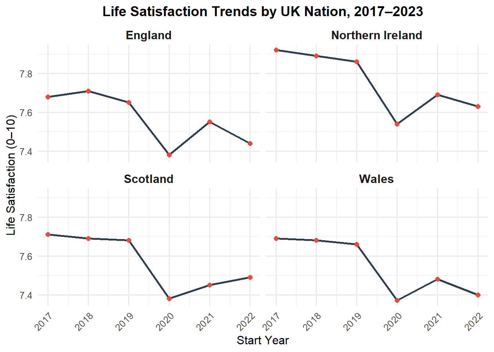
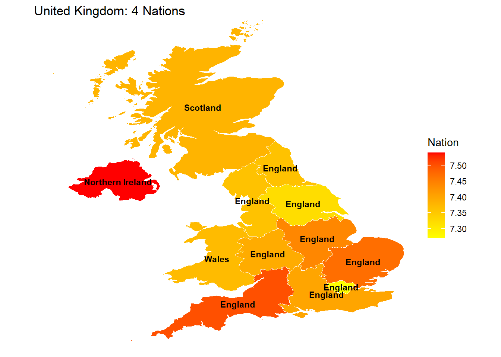
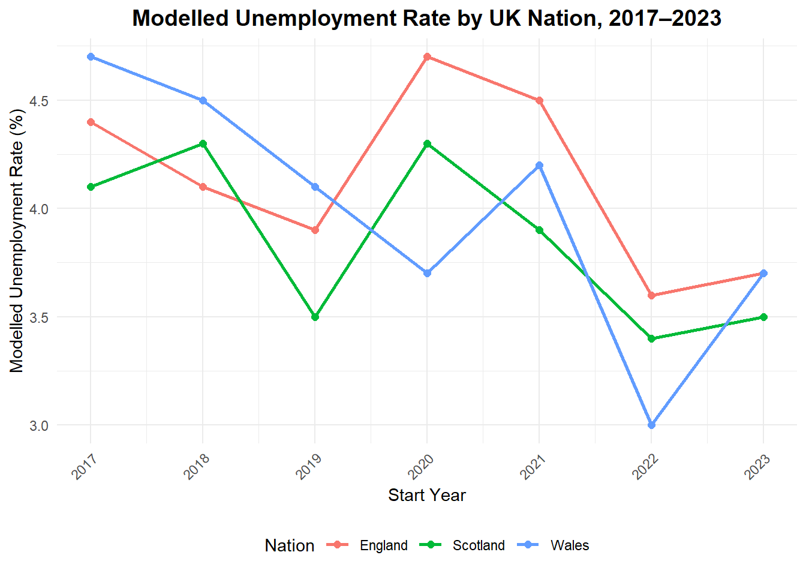
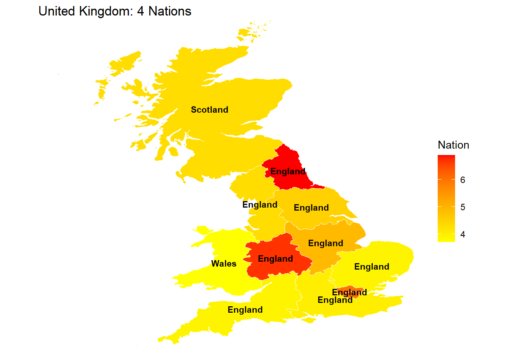

life_satisfaction_clean <- read_ods("data/datadownload.ods", sheet = "61", skip = 5) %>%
clean_names() %>%
rename(
value = value_score_out_of_10
) %>%
replace_na(list(
area_name = "Unknown",
value = 0
)) What is your blogpost title? Add it here??
Assignment 4 ETC5512
Topic of this work
I aim to explore how the unemployment rate and life satisfaction have changed across the United Kingdom’s four nations (England, Scotland, Wales, and Northern Ireland) from 2017 up to 2023, and to investigate whether there is any observable relationship between these two indicators over time. In other words, the question driving this analysis is: “How have trends in unemployment and subjective well-being (life satisfaction) evolved in each UK nation from 2017–2023, and do periods of higher unemployment correspond with lower life satisfaction?” This topic was chosen because unemployment and personal well-being are both crucial measures of a society’s health – by examining them together, we can gain insights into the socio-economic impacts of events like the late 2010s economic changes, Brexit, and the COVID-19 pandemic on people’s livelihoods and well-being. It’s an area of personal interest as it combines economic and social dimensions: understanding if a rise in joblessness is mirrored by a dip in life satisfaction can highlight the human impact behind labor market statistics. Moreover, the question offers a chance to apply various data skills (from data sourcing to visualization) on real-world open data, aligning well with the assignment’s goal of turning data into information and knowledge.
Data description
The data selected to answer this question come from the UK Office for National Statistics (ONS), specifically an open dataset that provides a range of subnational indicators over time. This dataset is well-suited to the task because it contains both of the key variables needed – the modelled unemployment rate and the average life satisfaction score – broken down by geography and year. The data cover the period from around 2017 through 2023 and include values at the level of UK nations (as well as finer geographies). Crucially, this means we have directly comparable metrics for England, Scotland, Wales, and Northern Ireland across multiple years, allowing for trend analysis and cross-country comparisons. The dataset is part of ONS’s effort to make local-level statistics accessible; it provides annual estimates for numerous measures at national and local levels.
Life satisfaction is one of the ONS’s personal well-being measures, derived from survey questions in the Annual Population Survey. Respondents are asked “Overall, how satisfied are you with your life nowadays?” on a scale from 0 (“not at all”) to 10 (“completely”). The data we use are the average life satisfaction scores (on this 0–10 scale) for each nation and year. Because these are based on large-scale sample surveys (tens of thousands of responses), they provide reliable estimates of the population’s subjective well-being over time. One advantage of using this measure is that it captures an important aspect of quality of life beyond economic indicators, and ONS has consistently collected it since 2011 as part of the national well-being program. A consideration, however, is that life satisfaction is subjective and can be influenced by many factors (health, social changes, etc.), so it isn’t a direct causal outcome of economic changes. Still, as an official statistic (now an established part of national well-being monitoring), it offers valuable insight and is appropriate for our analysis. The data are sample-based (not a full census), so there is some margin of error, especially for smaller populations. At the country level this is generally not a major limitation (the sample sizes are large), but one should be cautious about over-interpreting very small differences. All data are aggregated and anonymized, so there are no privacy concerns; the statistics are published openly under the Open Government Licence.
The modelled unemployment rate is an ONS experimental statistic that estimates the unemployment percentage for local areas. It represents the proportion of the economically active population (age 16 and over) who are unemployed (without a job, actively seeking work). These model-based unemployment estimates are used because sample surveys alone (like the Labour Force Survey or Annual Population Survey) can be unreliable for small areas; the ONS improves them by incorporating additional information (for instance, claimant counts) to “model” the unemployment rate at local authority level. For our purposes, we extract the nation-level figures from this dataset (which align closely with official unemployment rates reported at country level). This indicator is suitable because it directly measures the labor market conditions we’re interested in, and it’s available annually over the period of interest. A limitation is that as a modelled estimate, it’s subject to revisions and methodological quirks (and it’s labeled “statistics in development” by ONS). However, it is the best source for consistent subnational unemployment rates and is produced by the national statistical agency, lending it credibility. We note that Northern Ireland’s data come via a slightly different route (through the NI statistics agency using a similar definition), and in earlier years small sample sizes there can lead to less precision. Overall, though, the data should be robust enough to compare broad trends.
In terms of metadata: The unemployment rate is given in percentage terms (% of labor force), and life satisfaction in mean scores out of 10. The time frame for both is yearly; life satisfaction is reported by financial year (e.g. April–March periods labeled as 2017–18, 2018–19, etc.), while the modelled unemployment appears to be for years ending in each calendar year or similar (we will clarify in processing). Geographically, the dataset includes local authorities and higher aggregations. We will focus on the four constituent countries of the UK. All data are openly available from ONS and carry the standard caveats of official statistics. They are provided under the Open Government License, meaning we are free to use and share them in this analysis.
Datasets:
ONS Subnational Indicators Dataset – an ONS compiled data file (March 2023 edition) containing numerous local-level indicators over time. From this, we specifically used:
Table 5: Modelled unemployment rate (percentage of 16+ economically active who are unemployed) for each UK nation, 2017–2023.
Table 61: Average life satisfaction score (mean self-reported life satisfaction on 0–10 scale) for each UK nation, 2017–2023.
Table 19: Business death rate (percent of active enterprises that closed, UK total) for years 2017–2023, used as a supplementary indicator of economic conditions.
These data tables were all part of the same ONS workbook download (an OpenDocument Spreadsheet). All figures are © Crown Copyright, sourced from ONS and licensed under OGL v3.0. They provide a consistent basis for our analysis, as they share common time frames and geographic categorizations.
Data download
The dataset was obtained through the ONS website’s local statistics interface. The data for the selected indicators (modelled unemployment rate and life satisfaction) was downloaded as a multi-sheet ODS file (datadownload.ods). We identified the relevant sheets (Table 5 and Table 61) within this file to extract the needed data. After downloading, the data was read into R using the readODS package (which can import .ods spreadsheets). The data then went through a cleaning process using dplyr and janitor packages. We removed any unnecessary rows/columns (such as footnotes or totals) and used janitor::clean_names() to standardize column names (e.g., converting them to lowercase and snake_case). The period field, originally a text range (for example, a span of years), was parsed to create separate numeric columns year_start and year_end. This parsing involved extracting the starting year and ending year from the period string. Finally, we ensured the data types were appropriate (e.g., converting the value field to numeric) and that each dataset was ready for analysis. The cleaned data was then used to produce visualizations
In this project, geographic boundary shapefiles were not downloaded manually, but rather accessed directly within R using the giscoR package (via gisco_get_nuts() with nuts_level = 1) to retrieve the UK’s national-level administrative boundaries (England, Scotland, Wales, and Northern Ireland). These shapefiles are publicly provided by Eurostat and licensed for free academic use.
uk_nuts1 <- gisco_get_nuts(nuts_level = 1, resolution = "03") %>% #nuts_level = 1选地区等级取
filter(CNTR_CODE == "UK")
uk_nuts1 <- uk_nuts1 %>%
mutate(nation = case_when(
grepl("^UKM", NUTS_ID) ~ "Scotland",
grepl("^UKN", NUTS_ID) ~ "Northern Ireland",
grepl("^UKL", NUTS_ID) ~ "Wales", # UKL includes Wales
TRUE ~ "England"
)) %>%
mutate(NUTS_NAME = str_remove_all(NUTS_NAME, " \\(ENGLAND\\)"))unemp_clean <- read_ods(
"data/datadownload.ods",
sheet = "5",
skip = 5
) %>%
clean_names() %>%
rename(
value = value_percent
) %>% filter(
between(
as.integer(str_sub(period, 1, 4)),
2017, 2023
)
) %>%
mutate(
start_date = str_extract(period, "^[^/]+") %>% as_date(),
year_start = year(start_date),
year_end = year_start + 1
) %>%
select(
area_code,
area_name,
year_start,
year_end,
value)Contains public sector information licensed under the Open Government Licence v3.0. © Crown copyright 2017-2022, Office for National Statistics.

What’s in this section
Here is where you should write your blogpost! (Task 2)
Blogpost Structure
There is no strict structure for you to follow. However, here is a skeleton structure you may find helpful.
Motivation
The COVID-19 pandemic was an unprecedented economic and social shock that affected people’s livelihoods and well-being across the globe. This post examines how unemployment rates and life satisfaction (a measure of subjective well-being) changed from 2017 to 2023 in the four nations of the United Kingdom – England, Scotland, Wales, and Northern Ireland – focusing on the pandemic year 2020. The goal is to see how the onset of COVID-19 impacted these indicators and whether a spike in unemployment coincided with a decline in life satisfaction. This topic connects economic conditions (joblessness) with quality of life, helping us understand the human impact behind the labor market stats. By comparing trends before, during, and after 2020 across the four nations, we gain insight into each region’s resilience and vulnerabilities during this tumultuous period.
Data
We use annual ONS data (2017–2023) on two indicators: the modelled unemployment rate (percentage of the labor force unemployed) and the average life satisfaction score (mean self-reported score on a 0–10 scale). These statistics are provided for each UK country, enabling direct comparisons between England, Scotland, Wales, and Northern Ireland. Notably, the 2020 values capture the period of the first COVID-19 wave and national lockdowns, when we expect the strongest effects. This analysis was conducted in R. We used ggplot2 for the line charts and giscoR for mapping the nations, illustrating a range of data visualization approache
Analysis
Life Satisfaction Trends (2017–2023)
Life satisfaction in the UK’s nations was relatively stable from 2017 to 2019, with only small year-to-year changes. In 2020, however, all four nations saw a drop to their lowest life satisfaction levels in the period (see @Figure1). For example, England’s average score fell from around 7.7 (pre-pandemic) to 7.4 in 2020, and Wales dropped from roughly 7.4 to 7.0. This dip in well-being reflects the widespread impact of the pandemic on daily life beyond just job losses (e.g. health anxieties, isolation).
There are also persistent differences between nations. Throughout 2017–2023, Northern Ireland reported the highest life satisfaction (e.g. around 7.8 in 2019) and Wales the lowest (around 7.0 at its 2020 low), with England and Scotland in between. The 2020 map of life satisfaction (@Figure2) highlights this: Northern Ireland appears highest and Wales lowest in that year. Yet despite these baseline differences, the 2020 decline hit all nations – underscoring that COVID-19’s negative effect on well-being was broad-based rather than localized.
After 2020, life satisfaction partially recovered. Scores improved in 2021–2022 as social restrictions eased, but by 2023 they still generally remained slightly below their pre-pandemic highs. In other words, well-being didn’t fully rebound even when the immediate crisis passed.
life_satisfaction_clean2 <-
life_satisfaction_clean %>%
filter(
area_name %in% c("England", "Scotland", "Wales", "Northern Ireland"),
between(as.integer(str_sub(period, 1, 4)), 2017, 2023)
) %>%
separate(period, into = c("year_start", "year_end"), sep = "-") %>%
mutate(year_start = as.integer(year_start))
ggplot(life_satisfaction_clean2, aes(x = year_start, y = value)) +
geom_line(size = 1, color = "#2C3E50") +
geom_point(size = 2, color = "#E74C3C") +
facet_wrap(~ area_name, ncol = 2) +
scale_x_continuous(breaks = 2017:2023) +
labs(
x = "Start Year",
y = "Life Satisfaction (0–10)",
title = "Life Satisfaction Trends by UK Nation, 2017–2023"
) +
theme_minimal(base_size = 12) +
theme(
strip.text = element_text(face = "bold", size = 12),
axis.text.x = element_text(angle = 45, hjust = 1),
plot.title = element_text(face = "bold", size = 14, hjust = 0.5)
)
map_life <- life_satisfaction_clean %>%
filter(period == "2020-2021") %>%
mutate(`area_name` = toupper(`area_name`)) %>%
filter( `area_name` %in% uk_nuts1$NUTS_NAME) %>%
left_join(uk_nuts1, by = c("area_name" = "NUTS_NAME")) %>%
mutate(centroid = st_centroid(geometry)) %>%
mutate(
x = st_coordinates(centroid)[, 1],
y = st_coordinates(centroid)[, 2]
) %>%
mutate(NAME_LATN = str_remove_all(NAME_LATN, " \\(ENGLAND\\)"))
ggplot(map_life)+
geom_sf(aes(fill=`value`,geometry = geometry), color = "white")+geom_text(aes(x = x, y = y,label = nation), size=3, fontface ="bold", color ="black") + scale_fill_gradient(low="yellow",high ="red",na.value = NA)+ylim(NA,59)+labs(title ="United Kingdom: 4 Nations",fill="Nation") + theme_void()
Unemployment Trends (2017–2023)
In 2017–2019, unemployment rates in all nations were low (~3–4%) and even drifting downward thanks to a strong labor market. 2020 saw a sharp spike as the pandemic triggered an economic shutdown (see @Figure3). For example, England’s unemployment rate jumped from about 4% in 2019 to over 5% in 2020. Scotland and Wales each rose by roughly 1 percentage point as well. Northern Ireland was a notable exception – its rate increased only slightly (from ~2.5% to ~3%), thanks in part to different industry structures and government support (Northern Ireland actually hit a record low unemployment around mid-2020).
The unemployment map for 2020 (@Figure4) shows the highest jobless rates in England and the lowest in Northern Ireland, with Scotland and Wales in between. This snapshot highlights that economic pain was uneven: England’s more urban economy was hit harder (some regions neared 6% unemployment) while Northern Ireland saw a much milder impact.
After 2020, as economies reopened, unemployment quickly fell. By 2022 all four nations were back around 3–4% (multi-decade lows in some cases), reflecting a robust recovery aided by job-support policies. There was only a slight uptick by 2023 as conditions stabilized, leaving unemployment rates still very low by historical standards.
Connecting Unemployment and Well-Being
Viewed side by side, there is a clear inverse relationship between these indicators: when unemployment spiked in 2020, life satisfaction plunged. This is no surprise – job losses and economic uncertainty take a toll on well-being – and the data show 2020 as a pivotal turning point for both metrics across all nations. Notably, nations that fared better on one measure also did better on the other: for instance, Northern Ireland’s relatively low unemployment corresponded with its higher life satisfaction, whereas Wales experienced both higher unemployment and lower well-being.
However, the link is not perfectly one-to-one or instantaneous. By 2022, unemployment had fully recovered, but life satisfaction did not return to its earlier peak. Clearly, factors beyond employment (such as health and mental health impacts) continued to affect people’s life satisfaction even after they went back to work. In other words, economic recovery alone isn’t enough to restore overall happiness levels – a reminder that public well-being may need direct support (e.g. mental health services, community rebuilding) alongside economic measures.
line_unemp_clean <-unemp_clean %>%
filter(
area_name %in% c("England", "Scotland", "Wales", "Northern Ireland"))
ggplot(line_unemp_clean, aes(
x = year_start,
y = value,
color = area_name,
group = area_name
)) +
geom_line(size = 1) +
geom_point(size = 2) +
scale_x_continuous(breaks = 2017:2023) +
labs(
x = "Start Year",
y = "Modelled Unemployment Rate (%)",
color = "Nation",
title = "Modelled Unemployment Rate by UK Nation, 2017–2023"
) +
theme_minimal() +
theme(
plot.title = element_text(face = "bold", size = 14, hjust = 0.5),
axis.text.x = element_text(angle = 45, hjust = 1, vjust = 1),
legend.position = "bottom"
) 
map_unemp_clean <- unemp_clean %>%
filter(year_start == "2020") %>%
mutate(`area_name` = toupper(`area_name`)) %>%
filter( `area_name` %in% uk_nuts1$NUTS_NAME) %>%
left_join(uk_nuts1, by = c("area_name" = "NUTS_NAME")) %>%
mutate(centroid = st_centroid(geometry)) %>%
mutate(
x = st_coordinates(centroid)[, 1],
y = st_coordinates(centroid)[, 2]
) %>%
mutate(NAME_LATN = str_remove_all(NAME_LATN, " \\(ENGLAND\\)"))
ggplot(map_unemp_clean)+
geom_sf(aes(fill=`value`,geometry = geometry), color = "white")+geom_text(aes(x = x, y = y,label = nation), size=3, fontface ="bold", color ="black") + scale_fill_gradient(low="yellow",high ="red",na.value = NA)+ylim(NA,59)+labs(title ="United Kingdom: 4 Nations",fill="Nation") + theme_void()
Conclusions
In summary, COVID-19 had a profound impact on both unemployment and life satisfaction across the UK. Every nation saw unemployment jump and well-being fall in 2020, though the magnitude differed (England had the biggest jobless surge, Northern Ireland the smallest; Northern Ireland kept the highest life satisfaction, Wales the lowest). By 2022–2023, unemployment was back to pre-pandemic levels in all nations, but life satisfaction remained a bit lower than before – indicating a slower recovery for well-being.
Comparing the nations suggests that regions which minimized job losses (like Northern Ireland) saw smaller dips in life satisfaction, while those hit harder economically (like parts of England and Wales) suffered larger well-being declines. This underlines the tight interplay between economic health and social health: jobs and financial stability matter for happiness, but they aren’t the whole story. A truly full recovery from a shock like COVID-19 requires addressing not just the economy but also people’s mental and social well-being.
Finally, by examining multiple aspects of the data – time trends and geographic differences – we were able to paint a fuller picture of the pandemic’s impact. This multi-faceted approach, using a range of data skills and visualizations, helped turn raw data into an informative story about how each UK nation navigated the COVID-19 crisis.
References
What’s in this section
Question 5
Unglamorous data drudgery
Much of my data processing was tedious cleanup that never made it into the blog narrative. For example, I had to manually map region codes to country names (using NUTS codes to identify “England”, “Scotland”, etc.) so that the data could be grouped by nation. I also spent time wrestling with the ONS data file format – the indicators came in a multi-sheet .ods workbook, so I had to locate the correct sheets and strip out extraneous rows (like footnotes and totals) before I could use the data. Additionally, I performed repetitive wrangling tasks like splitting combined year ranges into separate start/end year columns and converting data types. These steps were not intellectually exciting, but they were time-consuming chores necessary to get the unemployment and life satisfaction data into a usable shape for analysis.
Question 6
Challenges faced
Challenges faced: One major challenge was dealing with gaps and quirks in the data. For instance, I discovered missing data for Northern Ireland in some series, which meant I couldn’t plot NI’s unemployment trend alongside the other countries for all years. I had to decide whether to omit NI in certain visuals or find a workaround. Another challenge was learning to use the giscoR package to obtain geographic shapefiles for mapping. I hadn’t used giscoR before, so figuring out how to fetch UK NUTS level boundaries and join them to my data took some trial and error. Handling the structure of the datadownload.ods file was also tricky – the dataset wasn’t in a straightforward CSV, and parsing the right tables from the ODS (and understanding the financial-year time labels for life satisfaction) required careful reading of documentation. These hurdles forced me to adapt on the fly, but overcoming them taught me new skills (like using a GIS package in R) and gave me a better understanding of the data’s limitations.
Questions 7
Imperfections & improvements
Questions 8
Version history of the analysis
I saved four versions of my analysis to document the iterative process. Version 1 was an initial draft with messy, exploratory code and minimal commentary, and the first maps still showed England split into subregions. In Version 2, I learned how to merge England’s subregions into a single shape for mapping and cleaned up the code structure while fixing initial errors. In Version 3, I made further improvements: I added context to the life satisfaction and unemployment comparisons, refined the visualizations for clarity, and resolved remaining issues. By Version 4, I focused on polishing the report for submission—optimizing the code for reproducibility, proofreading the text for clarity, and ensuring all insights were clearly presented. All four versions have been pushed to a GitHub repository.